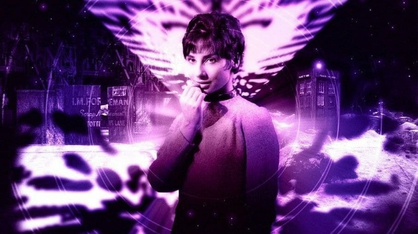
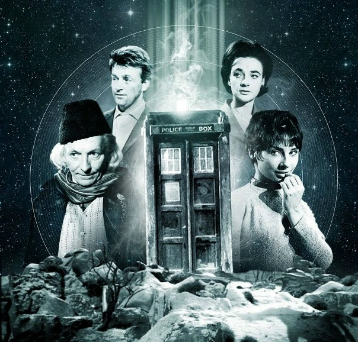
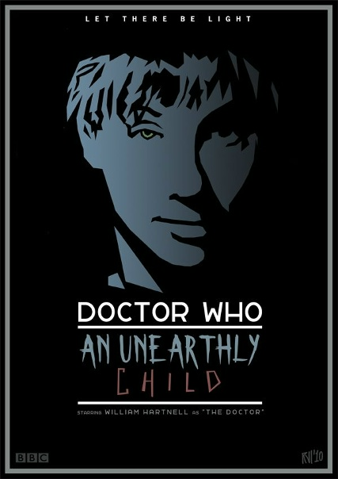

Эра Первого Доктора (1 сезон)
1. Неземное дитя ||| ДАЛЬШЕ >>>
отдельный эпизод без оставшихся 3-х Это не подгон старой озвучки) Субтитры: отсутствуют * серия вне нашей коллекции, поэтому субтитров и оригинальной озвучки нет. Так же эпизод не загружен в ТГ. |  |
|---|---|
или Original (ENG) Субтитры: Русские и Английские | |
23 ноября - 14 декабря 1963
4 эпизода по 25 мин
| 1. Неземное дитя 2. Пещера черепов 3. Лес страха 4. Создатель огня | Сохранились 16mm t/r |
|---|
 |  |  |
«Неземное дитя» запускает легенду: школьная загадка приводит учителей к таинственной будке, которая оказывается машиной времени. Герои попадают в доисторический мир, где сталкиваются с первобытным племенем и тайной огня. Знаковый момент — рождение культового звука ТАРДИС из случайной записи. Серия задаёт главный мотив сериала: любопытство как путь сквозь эпохи.
 VHS - февраль 1990 |  VHS - сентябрь 2000 |
|---|---|
 DVD - 30 января 2006 |  DVD бокс-сет - январь 2006 * Версия в нашей группе |






